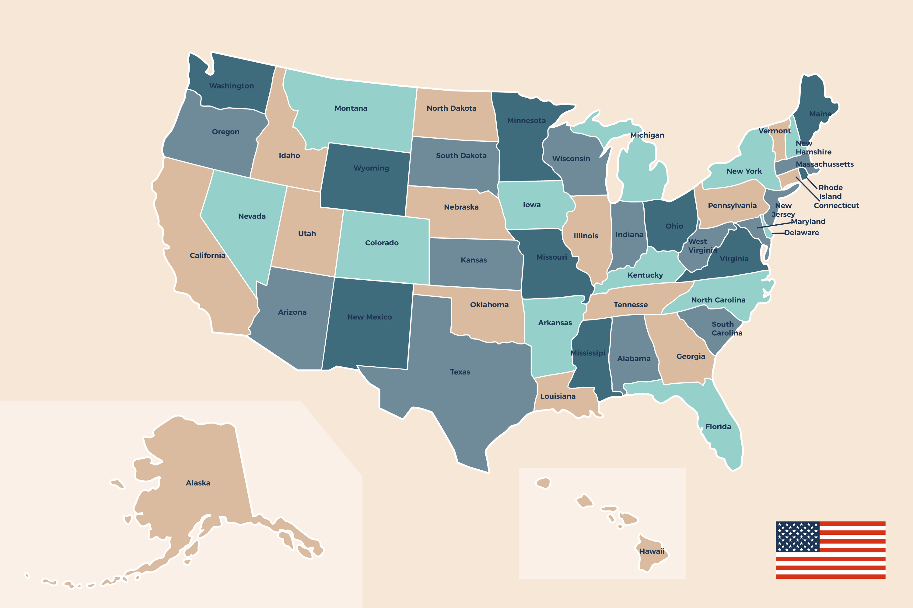

Welcome to testQUIZ? Your Gateway to Discovering the United States of America!

🇺🇸 Introduction to the United States: Welcome to the land of the free and the home of the brave! The United States of America is a diverse and vibrant country located in North America, bordered by Canada to the north, Mexico to the south, the Atlantic Ocean to the east, and the Pacific Ocean to the west.
🏛️ History and Independence: The journey of the United States began with the Declaration of Independence on July 4, 1776. In the historic city of Philadelphia, the Founding Fathers signed a document proclaiming the thirteen American colonies as a new nation, free from British rule.
🏰 Capital and Geography: The capital of the United States is Washington, D.C., a city rich in history and home to iconic landmarks like the White House, the Capitol, and the Washington Monument. The country boasts diverse geography, from the majestic Rocky Mountains in the west to the bustling metropolises in the east.
⛰️ Mountain Ranges: The western part of the United States is graced by the Rocky Mountains, a vast mountain range that stretches from Canada to New Mexico. These rugged peaks offer breathtaking landscapes and outdoor adventures.
🦅 National Symbols: The bald eagle, a majestic bird of prey, is a symbol widely recognized as representative of the United States. Its strength and freedom make it an iconic figure, often associated with the nation's spirit.
📜 Founding Document: The fundamental laws and principles of the United States are outlined in the Constitution. Crafted in 1787, this historic document serves as the backbone of the nation, defining its government structure and protecting the rights of its citizens.
☀️ The 'Sunshine State': Florida, known as the 'Sunshine State,' is a popular destination for its sunny weather and beautiful beaches. From the vibrant culture of Miami to the magical world of Disney in Orlando, Florida offers a diverse and exciting experience.
👔 Economics and Politics: The United States boasts the world's largest economy, driven by innovation, entrepreneurship, and a diverse range of industries. Its political landscape is characterized by a democratic system, with a President serving as the head of state.
🇺🇸 Presidents and Leadership: The 16th President, known for leading the nation through the Civil War, was Abraham Lincoln. The 26th President, remembered for his conservation efforts, was Theodore Roosevelt.
🌊 Largest River: The Mississippi River holds the title of the largest river in the United States, flowing through the heart of the country and playing a significant role in its history and development.
🍵 Boston Tea Party: The historic event known as the Boston Tea Party unfolded in Boston, Massachusetts. It was a pivotal moment in the lead-up to the American Revolution, where colonists protested British taxation by dumping tea into the harbor.
Embark on a journey of discovery with testQUIZ?, your ultimate guide to unraveling the rich tapestry of American culture, history, and much more!